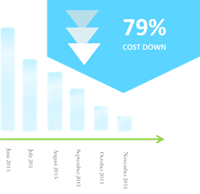
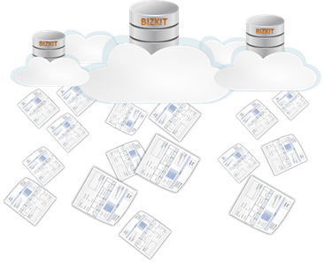

Cost Reduction (ลดค่าใช้จ่าย)
BizKit-Invoice เป็นระบบที่ให้บริการบนอินเตอร์เน็ต คุณจึงไม่จำเป็นต้องมีเซิฟเวอร์คุณภาพสูง ราคาแพงในการใช้ระบบ หมดปัญหาเรื่องการบำรุงรักษาดูแล hardware ต่างๆ และเนื่องจากคุณจ่ายค่า ใช้งานตามที่คุณใช้จริง(รายเดือน) คุณจึงไม่จำเป็นต้องลงทุนซื้อ license software ในราคาหลักแสน หลักล้านเพื่อจะใช้ระบบคุณภาพสูง และยังไม่ต้องวุ่นวายเกี่ยวกับการแบ็คอัพข้อมูลหรือการดูแลความปลอดภัย ให้กับข้อมูลอันมีค่าของคุณเพราะ ในขณะเดียวกันคุณยังสามารถประหยัดงบประมาณในการจ้างบุคลากร ด้านไอทีจำนวนมาก เพราะคุณจะได้รับการบริการเหล่านี้จากผู้เชี่ยวชาญที่เราพร้อมให้บริการคุณตลอด

Efficiency (เพิ่มประสิทธิภาพการทำงาน)
BizKit-Invoice ยังเพิ่มประสิทธิภาพในการทำงาน ลดความผิดพลาดในการบันทึกข้อมูล เปรียบเทียบกับการทำงาน บนโปรแกรม Office ต่างๆ ที่ต้องทำการบันทึกชื่อ ที่อยู่ลูกค้า หรือชื่อ ราคาสินค้า ใหม่ทุกครั้งที่จะทำการออก ใบกำกับภาษี ซึ่งทำให้เกิดการผิดพลาดได้ง่ายและบางกรณีเอกสารไปถึงมือลูกค้าแล้วแต่ต้องถูกนำกลับมาแก้ใหม่ทำให้เสียเวลาในการเรียกเก็บเงิน และเสียความน่าเชื่อถือ BizKit-Invoice ถูกออกแบบมาเพื่อแก้ไขปัญหา นี้โดยคุณสามารถ บันทึกชื่อ ที่อยู่ลูกค้า หรือชื่อ ราคา สินค้าไว้ และสามารถเลือกจากลิสต์ที่ได้บันทึกและ ตรวจสอบความถูกต้องไว้แล้ว ทำให้ลดเวลาในการออกเอกสารลง และลดจำนวนข้อมูลที่ต้องใส่ทุกครั้งทำให้ สามารถลดความผิดพลาดที่เกิดจากการบันทึกข้อมูลลงได้ อย่างมาก
Mobility (ทำงานได้ทุกที่ ทุกเวลา)
คุณจะมั่นใจได้ว่า ข้อมูลของคุณจะถูกเก็บไว้อย่างปลอดภัยและพร้อมให้คุณเรียกใช้งานได้ตลอดเวลา และจากทุกที่ที่มีการเชื่อมต่อ อินเตอร์เน็ต ไม่ว่าจากบ้านของคุณ จากบริษัทลูกค้า ในรถระหว่างเดินทาง แม้กระทั่งระหว่างที่คุณเจรจาธุรกิจอยู่ใน ต่างประเทศ ระหว่างการท่องเที่ยว หรือแม้กระทั่งเวลาที่คุณพักผ่อนอยู่ตามชายหาด BizKit-Invoice ก็ทำให้คุณ สามารถเข้าถึงข้อมูลของคุณได้จากทุกที่ในโลก